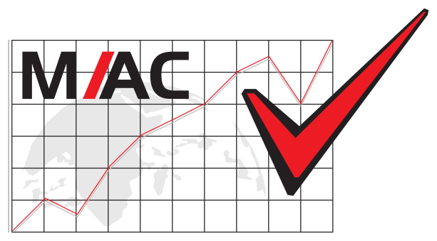

01
MAC Consultoria Contábil
Gerenciamento de Processos e Inovação
mai/2026 – hoje
Santo André, SP
Voltei para o escritório da minha família para arrumar a forma como o trabalho anda e trazer tecnologia para o dia a dia. Também cuido dos projetos estratégicos e vou construindo as ferramentas que a equipe usa.
1.1 processos
Como o trabalho anda
- Mapeei como funcionam a Contabilidade, o Departamento Pessoal, a Legalização e a entrada de clientes novos.
- Estou implantando o Domínio Processos, o sistema de gestão que a MAC escolheu.
- Acompanho uns dez projetos estratégicos e conto aos sócios, toda semana, como eles estão.
1.2 transformação digital
Automação e conteúdo
- Escrevi o plano de Contabilidade Digital, para os extratos dos clientes chegarem ao escritório via Open Finance, sem ninguém digitar nada.
- Criei mais de dez sistemas internos com IA, entre eles o ERP e o analisador financeiro (estão em Projetos).
- Escrevo a newsletter semanal e os materiais sobre a Reforma Tributária enviados aos clientes.
“Clareza não é ponto de partida. Clareza é consequência de ter começado.” Anotado no Synergy 2026.